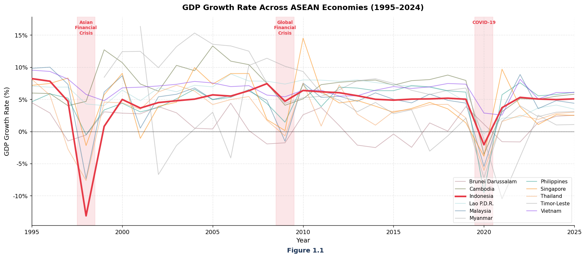
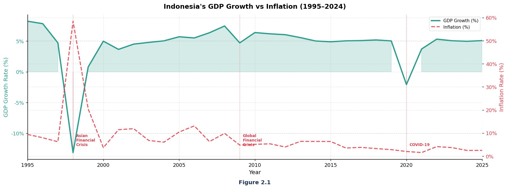
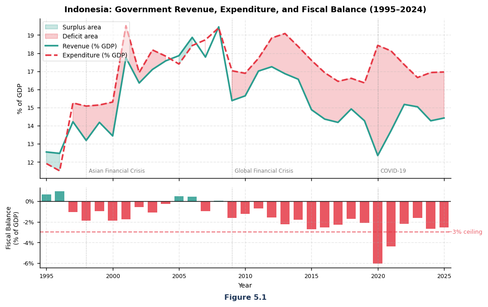
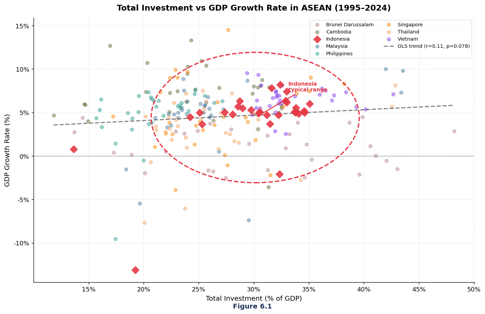
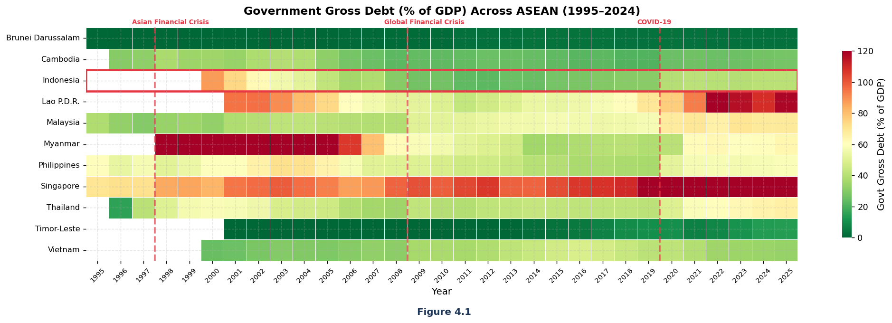
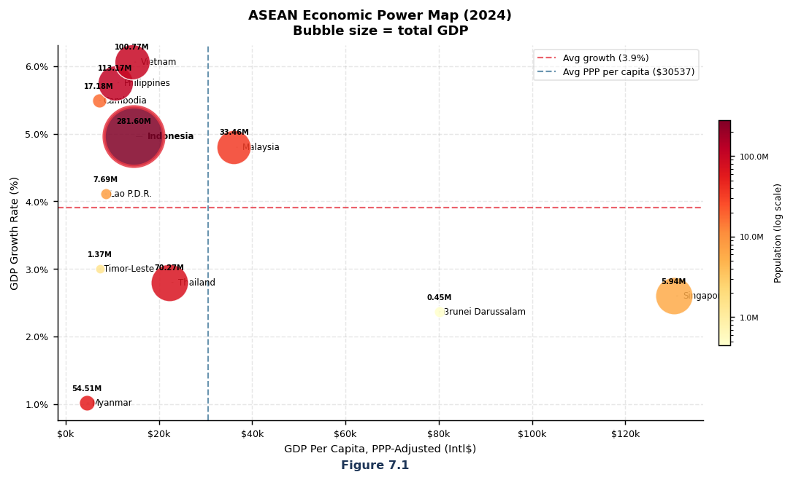

Resilient growth, uneven gains.
1995–2024, IMF WEO April 2024 vintage. Indonesia benchmarked against the ASEAN-9 average (excludes Myanmar and Timor-Leste).
deepest GDP contraction in ASEAN
above the 4.3% ASEAN-9 average
of GDP — above ASEAN's 27.4% average
Indonesia vs. the ASEAN-9 average
Light bar: ASEAN-9 average. Gold bar: Indonesia. Gold badge = Indonesia ahead, red badge = Indonesia behind.
Indonesia out-recovers the region on growth and out-invests it on capital — but under-collects on revenue by 4.2 points of GDP and turns that above-average investment into only average growth. The gap isn't how much Indonesia puts in; it's what comes out the other side.
Indonesia ranks 6th of 9 in GDP growth per unit of investment despite the above-average capital share, pointing to an efficiency problem rather than a financing one. At the same time, a 14.1% revenue-to-GDP ratio — the lowest in ASEAN — caps how much the state can spend on the human capital and infrastructure that would raise that efficiency, a challenge squarely inside SDG Target 8.2.
Evidence
Click any chart to enlarge. Generated from the group's own Jupyter notebook on the IMF WEO dataset.

GDP growth across ASEAN, 1995–2024

Indonesia: growth vs inflation

Revenue, expenditure & the 3% ceiling

Investment vs growth (OLS fit)

Government debt heatmap

2024 economic weight (bubble)